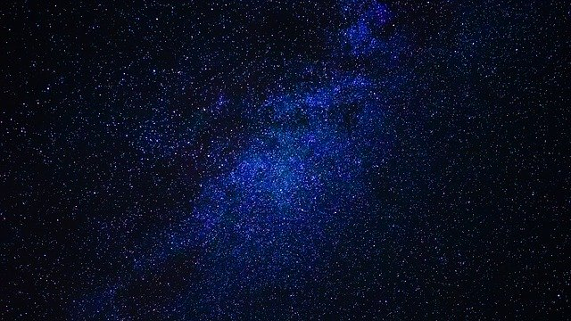

A csillagok hatalmas, forró gázokból álló égitestek, amelyek saját fényt bocsátanak ki. Az univerzumban rengeteg csillag található, és a Nap is egy csillag. Éjszaka szabad szemmel is sok csillagot megfigyelhetünk.

A Nap fénye körülbelül 8 perc alatt ér el a Földre. A csillagok különböző színűek lehetnek, például kékek, fehérek, sárgák vagy vörösek. A színük a hőmérsékletüktől is függ.
Tudj meg többet!| Csillag | Csillagkép | Szín |
|---|---|---|
| Sirius | Nagy Kutya | Kékesfehér |
| Canopus | Hajógerinc | Sárgásfehér |
| Alpha Centauri | Kentaur | Sárgás |